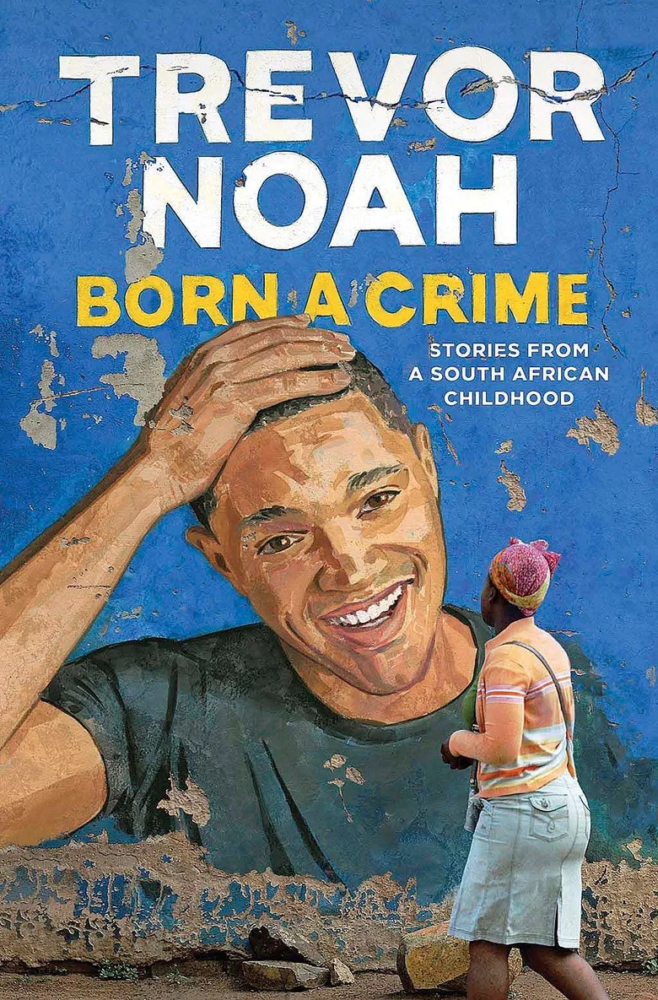
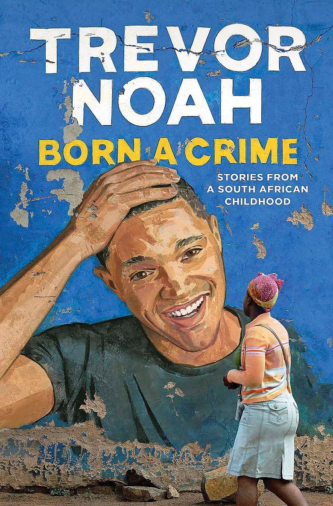
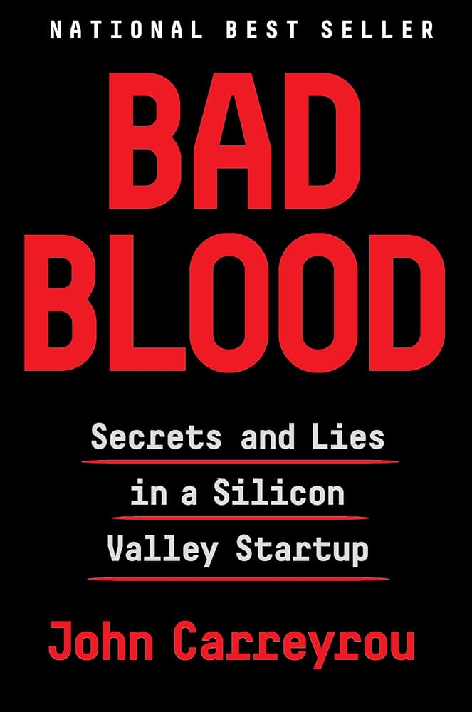
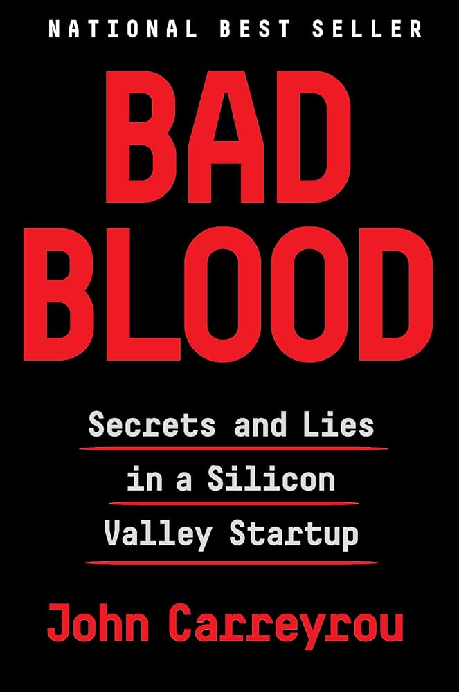

About Me
From a young age, I was always drawn to creating music, art, and writing. When I made my first website in middle school, everything changed when I realized coding would become my new creative outlet by combining my logical mindset. Since then, I have been passionate about Computer Science and loved thinking up new projects to work on, whether for fun or to solve a real-life problem. I approach my work with a creative spirit, always looking for ways to make positive change and bring about accessibility with technology. I am excited to continue growing through my studies and work experiences, and I am thrilled to see where my journey takes me next!
Interests
Music
I love listening to music, going to concerts, dancing, and mixing/producing with my DJ board!
Some of my favorite genres include:
Reading
I love reading books, especially fiction and biographies. Some of my favorite books include:
 

 
